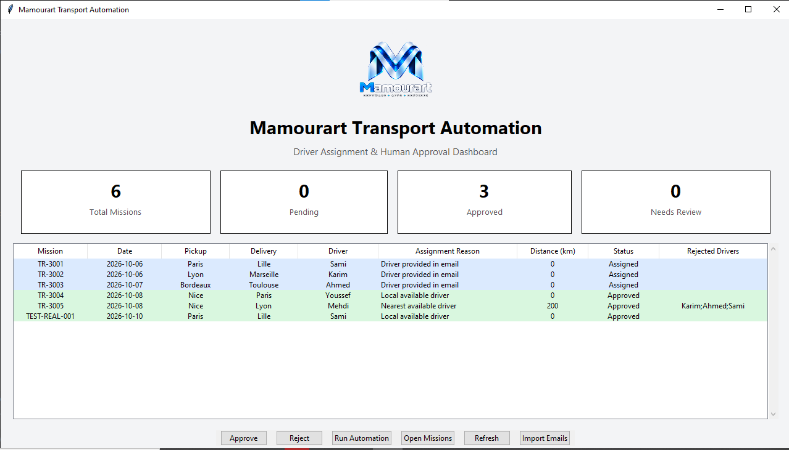
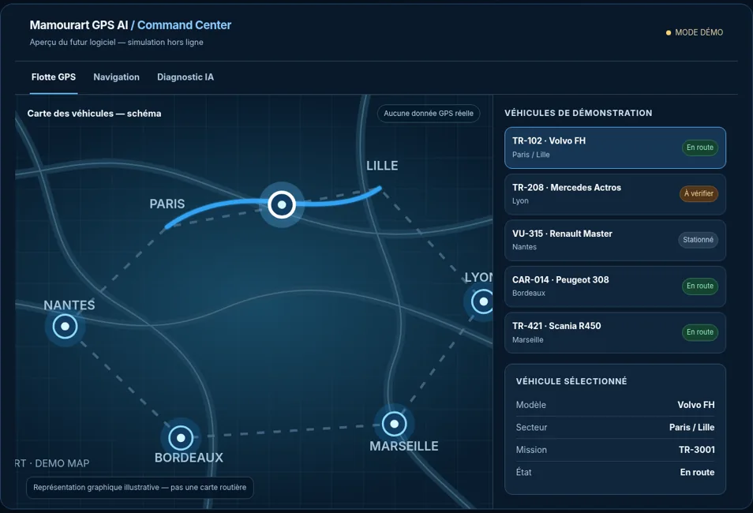
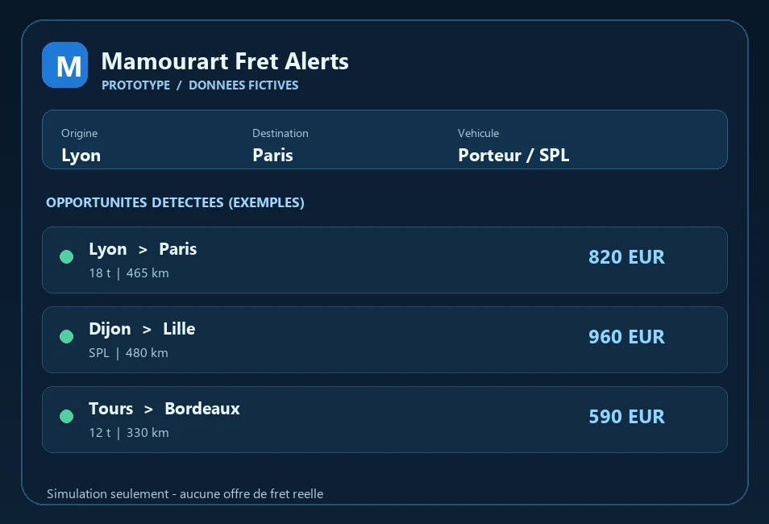

Applications métier
Centraliser les dossiers, suivre les opérations et préparer les validations dans un outil adapté à votre activité.
Studio de développement logiciel B2B
Applications métier, interfaces web et automatisations : des solutions pensées autour de vos processus, du cadrage aux premières démonstrations.
Services
Applications, interfaces, automatisation et connexions entre outils, définies à partir du besoin professionnel.
Centraliser les dossiers, suivre les opérations et préparer les validations dans un outil adapté à votre activité.
Donner aux équipes un accès clair aux informations et aux actions utiles, au bureau comme en déplacement.
Préparer les tâches répétitives et les décisions à vérifier, en gardant une validation humaine sur les actions retenues.
Faire circuler les informations entre vos outils pour limiter les ressaisies et rendre les données utilisables.
Portfolio
Réalisations internes et explorations logicielles : chaque projet est présenté avec son niveau d’avancement, sans promesse de service opérationnel.
Prototype de gestion des missions de transport : sélection du chauffeur, calcul de distance et validation humaine. Le développement se poursuit.

La vitrine Mamourart : une interface responsive bilingue pour présenter les domaines de travail, les prototypes et le contact.
Exploration d’une interface de navigation et de gestion de flotte. Les véhicules et les informations affichés sont fictifs.
Démonstration interactive sur données fictives, sans connexion GPS réelle.

Exploration d’une interface de veille fret : filtrer des offres fictives par trajet et véhicule pour illustrer un parcours de consultation.
Simulation avec des offres fictives. Aucun flux de fret réel, aucune négociation ni réservation de transport.

Des pistes en développement, sans démonstration disponible à ce stade.
Assistant logiciel orienté agent : comprendre le contexte, expliquer les erreurs, proposer des corrections et préparer des actions contrôlées par l'utilisateur.
Présentation bientôt disponible
Application Android de suivi des heures de travail, des plannings et d'estimation du salaire, destinée aux salariés en France.
Fonctionnalités prévues : suivi des heures, planning, estimation du salaire et module d'information « Mes droits ».
Pas encore publié
Approche
Du premier échange aux validations, avancer sur un périmètre défini et des cas d’usage concrets.
Clarifier le contexte, les utilisateurs et le résultat attendu.
Organiser les écrans, les données et les étapes avec les futurs usages en tête.
Construire les fonctions et les connexions convenues, puis les montrer progressivement.
Vérifier le comportement sur des cas concrets.
Rassembler les éléments nécessaires à la prise en main et convenir des prochaines étapes.
À propos
Mamourart est une marque et un projet de studio logiciel porté par son fondateur, Kamel Hamdi. Il explore des applications métier, des interfaces et des automatisations pour des usages professionnels.
Le travail part du besoin exprimé, puis passe par une solution définie, la conception, les tests et la mise à disposition. Lorsqu'une automatisation prépare une décision, une validation humaine reste prévue.
Contact
Pour une demande d'information ou pour échanger sur un projet, contactez Mamourart par courriel, LinkedIn ou GitHub.
Vous pouvez nous écrire directement ou utiliser le formulaire ci-dessous. Les demandes ne sont pas stockées dans une base de données du site.
Présentez votre besoin professionnel. Nous vous répondrons par e-mail.